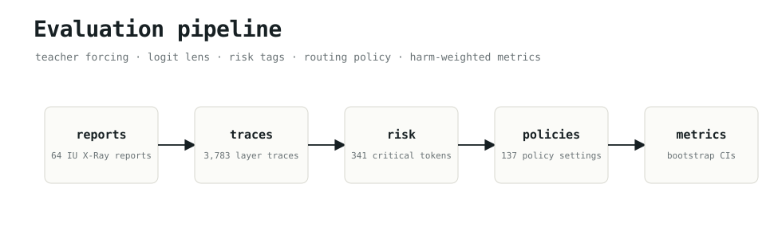
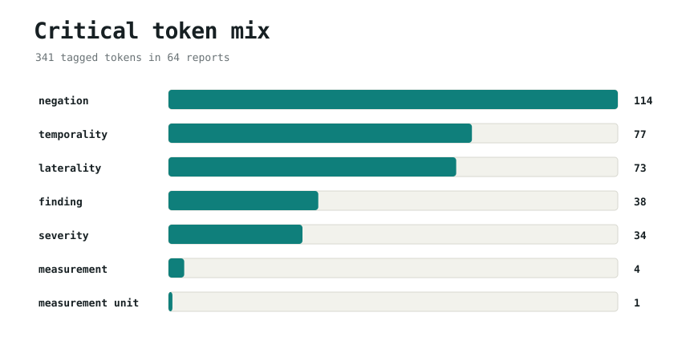
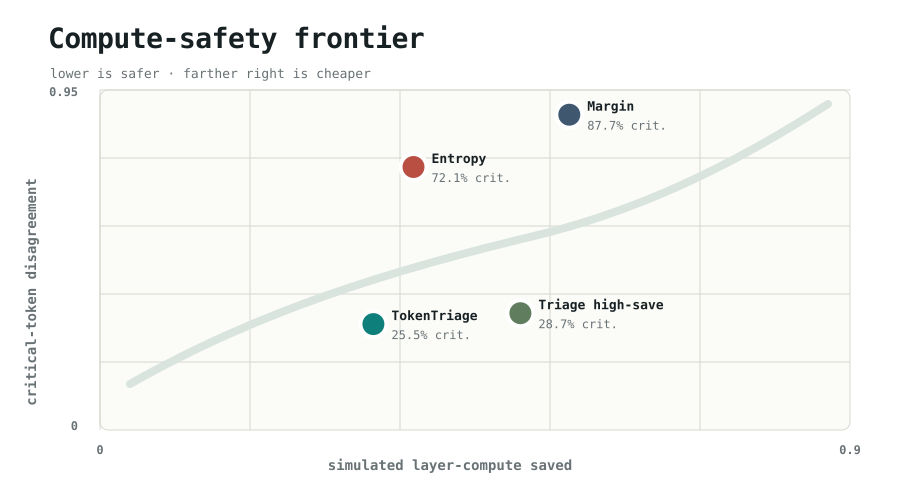
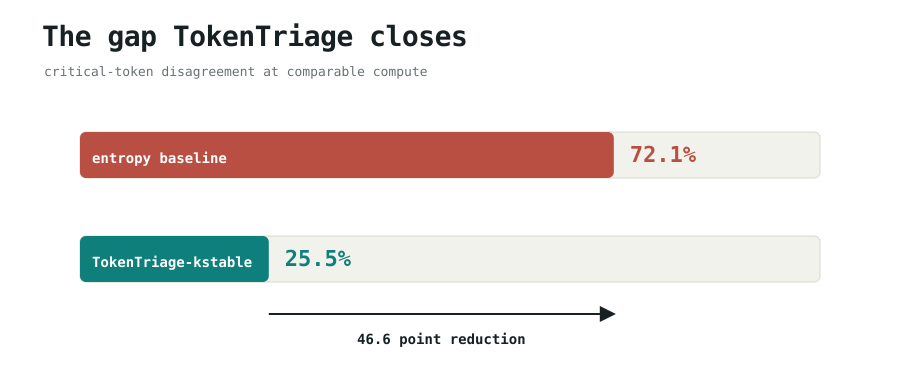
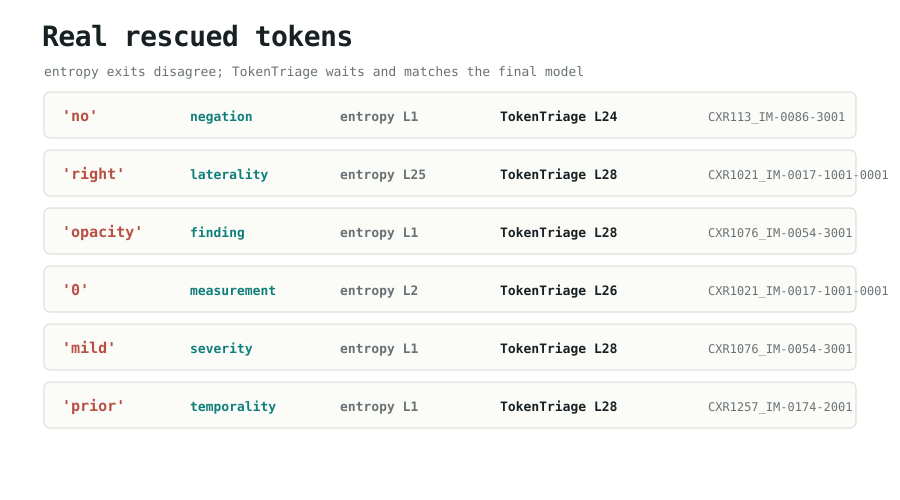
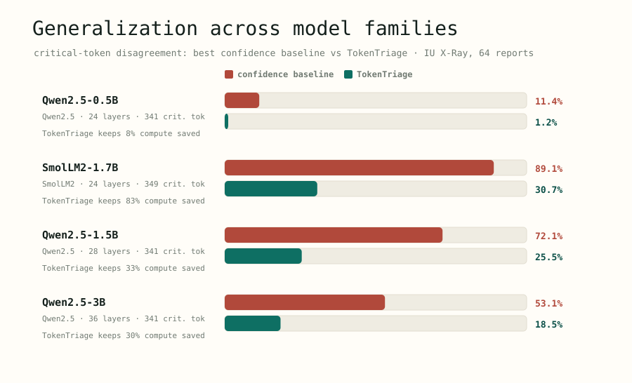
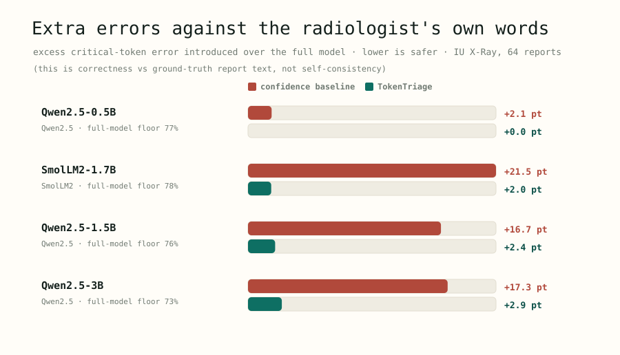
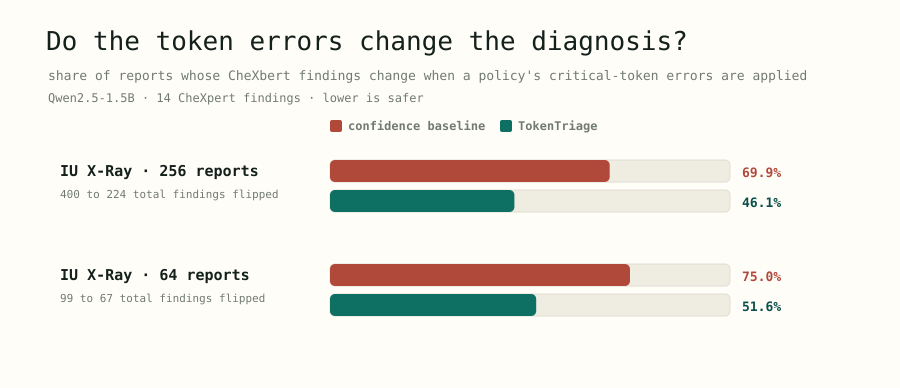

TokenTriage: Harm-Aware Token Routing for Clinical Language Model Inference
Kelly Powell, MBA · Danish Murad, M.S. · Benjamin A. Willett, Ph.D. · Richard Carlisle, B.S., CISSP · Bryan Webb, B.S. · Sandeep Bodduluri, M.S., Ph.D.
To run faster and cheaper, an AI can decide each word at a shallow layer instead of using its full
depth. Watch the same sentence written two ways. Both race to save time; one rushes the word that
carries the finding.
Confidence-only shortcut
noacutecardiopulmonarydisease
finding reversed: now reads “acute cardiopulmonary disease”
The two models run at the same speed. The shortcut spends its one risky guess on no; TokenTriage spends a little extra depth there and keeps it.
Who this is for
Anyone making a clinical language model run faster
Hospitals, imaging centers, and health-AI vendors increasingly use language models to draft,
summarize, or transcribe radiology reports. To control cost and latency they reach for speed-ups.
This work is the safety check those speed-ups are missing.
deploys
Clinical NLP teams
Running report drafting or summarization in production and tuning it for speed.
builds
Inference / efficiency engineers
Using early exit, speculative decoding, or quantization, and deciding which shortcuts are safe.
reviews
Safety & regulatory reviewers
Asking not just how accurate a model is on average, but where its mistakes land.
The gap
Speed-ups are judged on the average, not on the words that matter
Every common speed-up decides where to cut corners using confidence or average
accuracy. None of them ask the clinical question: when compute is saved, is it being taken
from the handful of words that determine the finding, like no, left,
severe, a measurement, or a disease name? We measured exactly that, three ways: against
the full model, against the words the radiologist actually wrote, and against the clinical findings
a standard labeler (CheXbert) reads out of the report.
What we found
Confidence-only shortcuts concentrate their errors on the critical words
Disagreement with the full model, on critical words
72.1%
A confidence-only early exit disagrees with the full model answer on nearly three-quarters of critical words.
TokenTriage, same speed
25.5%
Extra errors vs the words the radiologist wrote
+22 pts
Confidence-only exit adds 16 to 22 points of error on critical words, measured against ground truth.
TokenTriage
+4 pts
Reports where a clinical finding changes (CheXbert)
70%
The shortcut errors flip a real CheXbert finding in 7 of 10 reports. TokenTriage roughly halves that.
TokenTriage
46%
In short: the cost of going fast was being paid almost entirely by the words a clinician cares about
most. TokenTriage keeps the speed-up but stops spending it there.
How it works
Rush the easy words, slow down only on the risky ones
1
Tag the risky words
A simple detector flags negation, laterality, severity, temporality, measurements, units, and findings.
2
Let ordinary words go fast
Everyday words still take the cheap early exit, so most of the speed-up is kept.
3
Make risky words earn it
A critical word must reach a deeper layer and give the same answer for several layers in a row before it is allowed to commit.
Abstract
Adaptive-inference methods such as early exit reduce language-model compute by stopping at
intermediate layers when a token appears confident. We ask a question these methods do not:
when compute is saved on clinical text, which tokens pay for it? Using teacher-forced
logit-lens traces, we stratify final-model preservation by clinical semantic risk and find that
confidence-only exits concentrate their approximation error on exactly the tokens whose errors
change clinical meaning, negation, laterality, severity, measurements, and findings. On 256
IU X-Ray reports with Qwen2.5-1.5B, an entropy exit saves 37.9% of simulated layer compute
but disagrees with the full model on 71.7% of critical tokens; TokenTriage cuts this to
24.9% at comparable savings. The effect reproduces across four open models (two families, a 6x
size range) and a second dataset. Measured against the actual words of the radiologist,
confidence-only exit introduces 16-22 points of extra critical-token error while
TokenTriage introduces 0-4. We also report an honest negative: naive untrained free-running early
exit collapses for all policies, locating the contribution in the preservation / verification
regime rather than as a standalone decoding speedup.
1Method
The pipeline traces every report once, then evaluates all policies on the same cached traces, so comparisons are exact and reproducible.
Trace. Run each report teacher-forced; at every layer, project the hidden state through the LM head (logit lens) and record entropy, top-1/top-2 margin, target NLL, the top token, and whether it matches the full model.
Tag risk (pluggable). A lexical detector flags negation, laterality, severity, temporality, medication, measurement, unit, and finding tokens. The tagger is an interface, swap in RadGraph / CheXbert / radiologist labels without touching routing or evaluation.
Route. Ordinary tokens use a standard entropy exit. Critical tokens must additionally reach a minimum layer fraction and hold the same top prediction for k consecutive layers before exiting (TokenTriage-kstable).
Measure. Primary metric: critical-token disagreement with the full model (preservation), plus compute saved, harm-weighted disagreement, bootstrap CIs, and, separately, excess error against the gold report token (correctness).

Figure 2. Evaluation pipeline, generated from the run artifacts. Reports are traced once; every policy is scored on the same traces with report-level bootstrap confidence intervals.
2Experiments
Main experiment: the public ChayanM/IUXray-Data-Train-Test test split with
Qwen2.5-1.5B-Instruct at 256 reports (13,697 next-token positions, 1,163 critical tokens,
28 layers). Generalization: Qwen2.5-0.5B / 1.5B / 3B and SmolLM2-1.7B at 64 reports each, plus a
second dataset, Santhosh1705kumar/radiology-reports-chest (ROCO chest captions, 64
reports). All data and models are public.

Figure 3. Composition of the 341 critical tokens in the 64-report IU X-Ray sample, by clinical category.
3Main result: confidence-only exit concentrates error on critical tokens
The strongest confidence baseline (entropy, threshold 0.10) saves 37.9% of simulated compute but
disagrees with the full model on 71.7% of critical tokens. TokenTriage at
the matched threshold reduces this to 24.9%, a 46.9 point reduction, while
retaining 33.1% savings. Numbers are stable versus the 64-report run (0.721 to 0.255).
Table 1. Main result, 256 IU X-Ray reports / Qwen2.5-1.5B. Lower critical disagreement is safer; HWD = harm-weighted disagreement; CI = report-level bootstrap 95% interval.
Method
Setting
Compute saved
Crit. disagree
95% CI
HWD
Entropy
threshold=0.10
0.379
0.717
0.686-0.747
0.560
Margin
threshold=0.50
0.571
0.865
0.848-0.884
0.779
TokenTriage-kstable
ent=0.10, min=0.85, k=4
0.331
0.249
0.226-0.276
0.390
TokenTriage-kstable
ent=0.20, min=0.85, k=4
0.517
0.270
0.247-0.297
0.575

Figure 4. Compute-safety frontier. Lower is safer, farther right is cheaper; TokenTriage points sit below the confidence-only baselines at comparable savings.

Figure 5. The clinically meaningful gap at comparable compute (64-report view). Clay is the usual confidence-only exit; teal is the same model with a stricter halt rule for negations, lateralities, severities, measurements, and findings.

Figure 6. Real tokens from the stored traces where the entropy exit committed at an unstable layer while TokenTriage waited and matched the full model. Not mock examples.
4Generalization across families, scale, and a second dataset
We re-ran the full pipeline across four open models spanning two families and a 6× size range, plus
a 256-report run and a second dataset. Confidence-only exit concentrates error on critical tokens in
every configuration; TokenTriage closes most of the gap in every one.

Figure 7. Critical-token disagreement across four open models (IU X-Ray, 64 reports). TokenTriage (teal) sits far below the confidence baseline (clay) everywhere. Smaller models show a smaller gap, an honest detail: when the baseline is already safe, there is little to fix.
Table 2. Generalization (top) plus scale and a second dataset (bottom). Critical-token disagreement vs the full model.
Model / setting
Family
Layers
Crit. tok
Baseline
TokenTriage
Compute saved
Qwen2.5-0.5B (64)
Qwen2.5
24
341
11.4%
1.2%
8.5%
Qwen2.5-1.5B (64)
Qwen2.5
28
341
72.1%
25.5%
32.9%
Qwen2.5-3B (64)
Qwen2.5
36
341
53.1%
18.5%
29.7%
SmolLM2-1.7B (64)
SmolLM2
24
349
89.1%
30.7%
83.0%
Qwen2.5-1.5B (256)
Qwen2.5
28
1,163
71.7%
24.9%
33.1%
ROCO chest / Qwen2.5-1.5B (64)
Qwen2.5
28
150
62.0%
15.3%
27.3%
5Correctness against the words of the radiologist
A fair objection: preserving the full-model prediction is not the same as being right. Because the
teacher-forced text is the radiologist report, the gold next token is ground truth.
Exact-match against free prose has a high floor (models pick valid synonyms), so the controlled
quantity is the excess error introduced by approximation. Confidence-only exit adds 16-22
points of extra critical-token error against the words of the radiologist; TokenTriage adds 0-4, with no
new labels required.

Figure 8. Extra critical-token errors introduced over the full model, measured against the gold report token. Clay = confidence-only exit; teal = TokenTriage.
Table 3. Excess critical-token error against ground truth, over the full model. The full-model floor is high because exact next-token match of free prose is strict; the controlled quantity is the excess.
Model
Full-model floor
Entropy excess
TokenTriage excess
Qwen2.5-0.5B
77.1%
+2.1
+0.0
Qwen2.5-1.5B
75.7%
+16.7
+2.4
Qwen2.5-3B
73.3%
+17.3
+2.9
SmolLM2-1.7B
78.2%
+21.5
+2.0
Qwen2.5-1.5B (256)
74.2%
+19.0
+2.5
ROCO chest / Qwen2.5-1.5B
69.3%
+18.7
+4.0
6Entity-level correctness with CheXbert
Token-level error need not be clinically meaningful, a wrong digit may not change a finding. To
test clinical impact directly we run a counterfactual: for each policy we apply its critical-token
errors to the gold report and label the gold and perturbed reports with
CheXbert (the standard
14-finding chest-radiograph labeler), then ask how often the token errors of a policy change the
finding vector.

Figure 9. Share of reports whose CheXbert findings change when the critical-token errors of a policy are applied to the gold report. TokenTriage (teal) roughly halves clinical-finding changes versus confidence-only exit (clay).
Table 4. Entity-level correctness (CheXbert, Qwen2.5-1.5B). TokenTriage roughly halves the reports whose findings change and the total findings flipped, real clinical-entity correctness, not a token proxy. It does not eliminate clinical change (the honest residual).
Run
Entropy: reports changed
TokenTriage
Entropy: findings flipped
TokenTriage
IU X-Ray (256)
69.9%
46.1%
400
224
IU X-Ray (64)
75.0%
51.6%
99
67
7An honest look at the decoding regime
The results above hold in the preservation regime, where the input text is fixed (teacher
forcing, scoring, grounded generation, speculative-decoding verification). Does harm-aware routing
also help during free, autoregressive generation? We implemented real early-exit decoding, each
emitted token is chosen at its exit layer and fed back, so errors propagate, and compared full,
entropy, and TokenTriage decoders on 24 IU X-Ray continuations.
Negative result (reported in full)
At entropy 0.10, untrained logit-lens early exit collapses for both policies (prefix agreement
with the full model ≈ 2%, critical-term fidelity ≈ 0.10), and TokenTriage changed the emitted token
in 0 of 7 critical interventions: when the model freely generates a critical token it is
already confident about it, so the cheap-exit token is stable and harm-gating does not fire.
This matches why deployed early-exit systems train exit heads rather than read a raw logit
lens. The implication is not that the lens is wrong but that its value lies where the target text is
given, preservation, verification, and self-speculative-decoding acceptance, rather than in naive
untrained free generation. We therefore frame TokenTriage as a harm-aware preservation/verification
rule, and leave calibrated harm-aware generation (a trained critical-token exit head) to
future work. The strongest deployment hook is self-speculative decoding: accept cheap drafts for
ordinary tokens, but demand full-model confirmation for critical ones.
In lieu of quantization?
This does not replace quantization. It stacks with it.
Quantization (running the model in lower-precision math) and distillation (training a smaller
model) are the workhorses of fast AI today, and you should reach for them first. They save cost
on a different axis than early exit: precision and size, versus how many layers run per
word. Because the axes are independent, you can quantize a model and let it exit
early.
Early exit also has a real-world form that is already deployed: speculative decoding,
where a fast draft is checked by the full model. TokenTriage is the safety rule for that family.
It decides which draft words can be trusted without a full re-check, and which (the clinical ones)
cannot. The claim is not use early exit instead of quantization. It is: whenever you take
shortcuts on clinical text, take them by risk, not just by confidence.
8Questions a reader might reasonably ask
Why not just always run the full model?
You can, and for the highest-stakes settings you should. But latency and cost are real
constraints in deployment, which is the entire reason adaptive and speculative methods exist.
The point of TokenTriage is that if you are going to take shortcuts, the safe way is
to take them by clinical risk. It keeps the efficiency goal but removes most of the clinical
downside.
Does it slow everything down?
No. Only about 1 in 10 tokens is clinically critical; the other 90% still exit early. The
extra compute is spent narrowly, so most of the speed-up is retained (e.g. 33% compute saved
while halving clinical-finding changes).
Is this only about radiology?
We test it on chest X-ray reports because they have clean, well-studied clinical labels
(CheXbert). But the core idea, a few words carry the meaning, so spend compute by
consequence, applies to any high-stakes text where a shortcut on the wrong word is costly.
Is "harm" measured by real clinical outcomes?
Not yet, that would need radiologist adjudication. We use three increasingly strict proxies:
agreement with the full model, agreement with the exact words of the radiologist, and changes to
CheXbert clinical findings. We say so plainly; turning these into outcome studies is future
work.
9Reproducibility
Every table regenerates from cached per-token logit-lens traces with one command set.
The risk tagger is lexicon-based; the interface is pluggable but a RadGraph/CheXbert tagger is not yet used to assign risk.
Entity-level correctness is a CheXbert counterfactual on perturbed gold reports, not radiologist-judged report correctness or RadGraph relation-level evaluation.
Domain is chest radiology, language is English; Phi-3.5 was excluded due to a modeling/cache incompatibility, so families tested are Qwen2.5 and SmolLM2.
The decoding-regime result is a single operating point on one model; a trained harm-aware exit head is the natural next step.
11BibTeX
@misc{powell2026tokentriage,
title = {TokenTriage: Harm-Aware Token Routing for Clinical Language Model Inference},
author = {Powell, Kelly and Murad, Danish and Willett, Benjamin A. and Carlisle, Richard and Webb, Bryan and Bodduluri, Sandeep},
year = {2026},
note = {Harm-stratified evaluation of adaptive inference on clinical text},
url = {https://github.com/DIGlabUAB/token-triage}
}